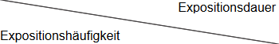
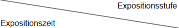

Nicht-Schutzstufentätigkeiten sind alle Tätigkeiten mit Biostoffen, die nicht in Laboratorien, in der Versuchstierhaltung, in der Biotechnologie sowie in Einrichtungen des Gesundheitsdienstes stattfinden (siehe Nummer 3.3). Solche Tätigkeiten werden beispielsweise in der Land- und Forstwirtschaft, in der Veterinärmedizin, in der ambulanten Pflege, in der Abfall- und Abwasserwirtschaft, in Schlachtbetrieben, im Zoohandel, bei Arbeiten an bestehenden Sanitäranlagen, bei Reinigungs- und Sanierungsarbeiten oder in Biogasanlagen durchgeführt.
(1) Betriebsabläufe und Arbeitsverfahren sind so zu erfassen, dass die einzelnen Tätigkeiten überprüft werden können hinsichtlich
(2) Eine Exposition liegt vor, wenn Beschäftigte bei ihren Tätigkeiten mit Biostoffen in Kontakt kommen. Entscheidend für den Grad der Gefährdung sind die Art und das Ausmaß der Exposition in Verbindung mit den Eigenschaften des Biostoffs. Bei infektiösen Biostoffen sind erregerspezifisch unterschiedliche Übertragungswege für das Infektionsgeschehen relevant (zu den Übertragungswegen siehe Anlage 1 Teil 1 und Teil 4).
|
Beispiel Legionellen müssen über die Atemwege aufgenommen werden, um zu einer Infektion zu führen, wohingegen bei Tetanuserregern eine Verletzung der Haut die Voraussetzung für eine Infektion ist. |
(3) Die sensibilisierenden oder toxischen Wirkungen von Biostoffen kommen z. B. bei Aufnahme von schimmelpilz- oder endotoxinbelasteter Luft über die Atemwege zum Tragen.
(4) Die Art der Exposition ist von zentraler Bedeutung für die Auswahl geeigneter Schutzmaßnahmen, deren Ziel die Unterbrechung möglicher Übertragungswege bzw. der Aufnahmepfade von Biostoffen ist.
(5) Zur Ermittlung der Art, Häufigkeit und Höhe der Exposition sind die Betriebsabläufe, Arbeitsverfahren, Arbeitsmittel und Tätigkeiten daraufhin zu prüfen, ob es zu einer Freisetzung von Biostoffen kommt und auf welche Weise diese erfolgt. Im Hinblick auf die Höhe der Exposition sind beispielsweise die Menge und Beschaffenheit der gehandhabten Materialien sowie die Intensität der mechanischen Bearbeitung von Bedeutung.
|
Beispiel Die Staubbildung ist bei der Bearbeitung trockener Naturrohmaterialien, wie Heu, Stroh, Getreide oder Zwiebeln höher als bei vergleichbaren Tätigkeiten mit feuchtem Material. Auch der Grad der Verarbeitung kann die Höhe der Exposition beeinflussen. Bei Tätigkeiten mit Rohbaumwolle ist die Exposition in der Regel höher als bei Tätigkeiten mit dem fertigen Gewebe. Bei Tätigkeiten mit Flüssigkeiten kann es je nach Arbeitsverfahren zu einer Aerosolbildung kommen (z. B. Tätigkeiten mit Hochdruckreinigern, Schleifprozesse, Fräsen). Auch die Arbeitsplatzbedingungen können die Höhe der Exposition beeinflussen, wie z. B. schlechte Lüftungsbedingungen. |
(6) Es ist zu prüfen, ob Bedingungen gegeben sind, die z. B. eine Besiedlung von Materialien mit Biostoffen bzw. eine Vermehrung schon vorhandener Biostoffe ermöglichen. Faktoren, die dabei eine Rolle spielen können, sind z. B. hohe Luftfeuchtigkeit, Wärme, geringe Durchlüftung, mangelhafte Reinigung und Hygiene, wobei Staub und sonstige Verunreinigungen als Nahrungsgrundlage für Biostoffe dienen können.
(7) Erfahrungen und Erkenntnisse aus vergleichbaren Tätigkeiten, ggf. auch aus anderen Branchen, sind zu berücksichtigen, z. B.
und
Entsprechende Informationen können ggf. bei den Präventionsabteilungen der Unfallversicherungsträger oder den Arbeitsschutzbehörden der Länder abgefragt werden oder aus Unfallberichten oder der arbeitsmedizinischen Vorsorge hervorgehen.
(1) In der Regel können die vorkommenden Biostoffe nicht umfassend und genau ermittelt werden, da sie nach Tätigkeit und Arbeitsmaterial zeitlich und örtlich variieren können und auch von äußeren Einflussfaktoren (z. B. Temperatur, Feuchtigkeit) abhängig sind. Bei der Informationsermittlung sind deshalb die Biostoffe zu berücksichtigen, mit denen bei der Durchführung der zu beurteilenden Tätigkeit erfahrungsgemäß zu rechnen ist. In Nummer 10 "Literaturverzeichnis" finden sich entsprechende Informationsquellen.
(2) Für die ermittelten Biostoffe ist, sofern möglich, festzustellen
(3) Die Informationsermittlung beinhaltet die Prüfung, ob
(4) Beim Vorkommen von sensibilisierend und toxisch wirkenden Biostoffen muss keine Differenzierung zwischen einzelnen Arten vorgenommen werden. Hier reicht beispielsweise die Information, dass bei der Sortierung von Abfällen regelhaft Schimmelpilze vorkommen.
(5) Bei der Informationsermittlung ist zusätzlich zu prüfen, ob aufgrund besonderer Situationen Biostoffe berücksichtigt werden müssen, die normalerweise nicht vorkommen. Dies ist zum Beispiel in der Nutztierhaltung der Fall, wenn eine bestimmte Tierseuche auftritt oder in Parkanlagen, bei denen aufgrund der Nutzung durch die Drogenszene mit weggeworfenen, benutzten Spritzen zu rechnen ist. Zu berücksichtigen ist auch das Vorkommen von Tieren, die Infektionserreger übertragen oder ausscheiden können, zum Beispiel von Ratten bei der Kanalreinigung.
(6) Regionale oder jahreszeitliche Unterschiede sind zu berücksichtigen. So spielen z. B. durch Vektoren übertragbare spezifische Krankheitserreger nur in bestimmten Regionen eine Rolle.
| Beispiele für Vektoren sind Zecken und Mücken. Aber auch Nagetiere, Hunde, Katzen oder Fledermäuse können als Vektoren Krankheitserreger übertragen. |
(7) Im Hinblick auf eine mögliche Infektionsgefährdung ist in Arbeitsbereichen von Nicht-Schutzstufentätigkeiten in der Regel mindestens mit dem Vorkommen von Biostoffen der Risikogruppe 1 und 2 zu rechnen. Für einige Arbeitsbereiche ist das mögliche oder gesicherte Vorkommen von Biostoffen der Risikogruppe 3 bei der Beurteilung der Infektionsgefährdung ausschlaggebend. Einen Überblick gibt Anlage 3.
(8) Im Hinblick auf mögliche sensibilisierende oder toxische Wirkung ist in Arbeitsbereichen von Nicht-Schutzstufentätigkeiten in der Regel von einer Mischexposition von sensibilisierend und toxisch wirkenden Biostoffen auszugehen.
Hinweis: Allgemeine Informationen zu den möglichen Wirkungen durch Biostoffe und zu Übertragungswegen finden sich in der Anlage 1.
(1) Bei der Beurteilung der Infektionsgefährdung werden die nachfolgenden Gefährdungskategorien als Konvention festgelegt.
(2) In der Anlage 3 sind beispielhaft branchentypische Tätigkeiten, die dort vorkommenden infektiösen Biostoffe mit ihren Übertragungswegen und die entsprechenden Gefährdungskategorien zusammengefasst.
(1) Die Schutzmaßnahmen sind entsprechend den in Nummer 3.4 festgelegten Grundsätzen festzulegen und zu treffen. Dabei steigen die Anforderungen mit der Höhe der Gefährdung.
(2) In besonderen Fällen, wie dem Ausbruch einer Tierseuche durch Biostoffe der Risikogruppe 3 oder Sanierungsarbeiten an alten Gerbereistandorten mit lebensfähigen Milzbrandsporen, müssen die Schutzmaßnahmen geeignet sein, eine Exposition der Beschäftigten sicher zu verhindern.
(3) Bei Tätigkeiten, die mit solchen vergleichbar sind, die einer Schutzstufenzuordnung unterliegen, z. B. in der ambulanten Pflege oder in der Veterinärmedizin, können aus den Schutzstufen geeignete Schutzmaßnahmen ausgewählt werden (siehe Nummer 4.3).
Für die Beurteilung der Gefährdung durch die sensibilisierende und toxische Wirkung von Biostoffen sind insbesondere die Expositionshöhe, -dauer und -häufigkeit von Bedeutung. Zur Beurteilung der Expositionshöhe werden drei Expositionsstufen als Konvention festgelegt. Nach Berücksichtigung von Dauer und Häufigkeit der Exposition gelangt man zu den Gefährdungsstufen "erhöht", "hoch", "sehr hoch", auf deren Grundlage die Anforderungen an Schutzmaßnahmen festgelegt werden. Diese Konventionen sind insbesondere für die Branchen und Tätigkeiten, die nicht von einer spezifischen TRBA abgedeckt sind, für die Gefährdungsbeurteilung heranzuziehen.
(1) Dem Konzept der Expositionsstufen liegt die Annahme zugrunde, dass die Gefährdung mit der Höhe der Exposition steigt. Die Expositionsstufen sind in Form einer Konvention festgelegt.
(2) Am Arbeitsplatz sind es insbesondere die luftgetragenen sensibilisierenden Biostoffe, die in hoher Konzentration über lange Zeit und wiederholt eingeatmet, zur Sensibilisierung bis hin zu allergischen Atemwegserkrankungen führen können. Für die Beurteilung des sensibilisierenden Potenzials liegen weder Arbeitsplatzgrenzwerte noch Dosis-Wirkungsbeziehungen vor.
(3) Toxisch wirkende Biostoffe können systemische oder lokale Effekte (z. B. Atemtrakt, Augenschleimhäute) bewirken. Für die toxische Wirkung von Pilzen oder Bakterien gibt es keine Dosis-Wirkungsbeziehungen und somit auch keine gesundheitsbasierten Grenzwerte.
(4) Die Höhe der Exposition gegenüber sensibilisierenden oder toxischen Biostoffen in der Luft am Arbeitsplatz wird auf der Basis von Konventionen in folgende Expositionsstufen unterteilt:
(5) Für die Zuordnung zu Expositionsstufen stehen zwei Möglichkeiten zur Verfügung:
a) Zuordnung von Tätigkeiten anhand von Messwerten
Auch wenn die Biostoffverordnung keine Messverpflichtung vorgibt, können Arbeitsplatzmessungen oder die Nutzung bestehender Messwerte, ggf. aus vergleichbaren Tätigkeiten, für die Gefährdungsbeurteilung hilfreich sein. Geeignet sind nur Messwerte, die auf einer standardisierten Messmethodik basieren und für die repräsentative Werte für die Hintergrundbelastung vorliegen (siehe Anlage 2). Liegen für eine Tätigkeit Messwerte für verschiedene Biostoffe vor, sind die mit der höchsten Expositionsstufenzuordnung entscheidend.
Schimmelpilze
Die Expositionsstufen für luftgetragene Schimmelpilze werden wie folgt festgelegt:
* KBE steht für Koloniebildende Einheiten
Endotoxine
Die Expositionsstufen für luftgetragene Endotoxine werden wie folgt festgelegt:
* EU steht für Endotoxineinheiten (englisch endotoxin units)
Die Expositionsstufen sind nicht gesundheitsbasiert. Sie orientieren sich an der natürlichen Hintergrundkonzentration von Biostoffen in der Außenluft (vergleiche Anlage 2).
b) Zuordnung von Tätigkeiten anhand von Materialeigenschaften, Tätigkeits- und Arbeitsplatzmerkmalen
Liegen keine Werte von Arbeitsplatzmessungen vor, so ist eine Orientierung anhand Materialeigenschaften, Tätigkeits- und Arbeitsplatzmerkmalen möglich.
Bei Tätigkeiten mit Materialien, die Biostoffe enthalten, mit Biostoffen kontaminiert oder besiedelt sind, z. B. unbehandelten Naturmaterialen oder Abfällen, ist in der Regel mit der Freisetzung von Biostoffen in die Atemluft und einer erhöhten Exposition zu rechnen, es sei denn die Freisetzung ist ausgeschlossen. Dies gilt auch für Tätigkeiten mit Tieren, Tiermaterialien wie Tierhaaren oder tierischen Ausscheidungen. Tätigkeiten mit geringem Umfang insbesondere hinsichtlich der gehandhabten Menge, fallen in der Regel nicht in die Expositionsstufe "Erhöht", z. B. das Bestücken von Obst- und Gemüseauslagen im Einzelhandel.
Ob die Tätigkeiten den Expositionsstufen "Hoch" oder "Sehr hoch" zuzuordnen sind, hängt von verschiedenen Faktoren ab. Dazu zählen:
Materialeigenschaften
Tätigkeitsbezogene Faktoren
Arbeitsplatzbezogene Faktoren
Es kann davon ausgegangen werden, dass mit der Zahl der Faktoren die zutreffen, die Höhe der Exposition steigt.
Bei Unsicherheiten über die Höhe der Exposition können Arbeitsplatzmessungen gemäß TRBA 405 "Anwendung von Messverfahren und technischen Kontrollwerten für luftgetragene Biologische Arbeitsstoffe" hilfreich sein.
In der Tabelle in der Anlage 4 werden Tätigkeiten und die damit in der Regel verbundene Expositionsstufe beispielhaft aufgelistet.
Grundsätzlich wird davon ausgegangen, dass bei sensibilisierend und toxisch wirkenden Biostoffen die Gefährdung auch mit der Dauer und der Häufigkeit der Exposition steigt bzw. bei kurzzeitigen und seltenen Tätigkeiten geringer ist als bei regelmäßigen und dauerhaften Tätigkeiten.
Für die weiteren Beurteilungsschritte werden die Expositionsdauer und -häufigkeit zur Expositionszeit zusammengefasst (Tabelle 1).
Tabelle 1: Konvention zur Beurteilung der Expositionszeit
 |
bis zu zwei Stunden pro Arbeitstag |
länger als zwei Stunden pro Arbeitstag |
| Weniger als 30 Arbeitstage im Jahr | kurz | mittel |
| 30 und mehr Arbeitstage im Jahr | mittel | lang |
Bei Tätigkeiten an wechselnden Arbeitsplätzen (z. B. bei der Schimmelpilzsanierung in Gebäuden) kann die Expositionshäufigkeit als Kriterium nicht immer sinnvoll angewendet werden. In diesen Fällen ist die Gefährdung auf der Grundlage der Expositionsstufe und der Expositionsdauer abzuleiten.
Für die Gefährdungsbeurteilung müssen die Expositionsparameter Höhe, Dauer und Häufigkeit zusammengeführt werden.
Durch die Kombination der Expositionsstufe und -zeit lässt sich eine Abstufung der Gefährdung durch sensibilisierende und toxische Biostoffe ableiten, was die Grundlage für die Anforderungen an Schutzmaßnahmen darstellt (siehe Tabelle 2).
Tabelle 2: Ableitung von Gefährdungsstufen für Tätigkeiten mit sensibilisierend und toxisch wirkenden Biostoffen
 |
erhöht | hoch | sehr hoch |
| Kurz | Erhöhte Gefährdung | Erhöhte Gefährdung | Hohe Gefährdung |
| Mittel | Erhöhte Gefährdung | Hohe Gefährdung | Hohe Gefährdung |
| Lang | Erhöhte Gefährdung | Hohe Gefährdung | Sehr hohe Gefährdung |
(1) Grundsätzliches Ziel der Schutzmaßnahmen ist die Minimierung der Exposition der Beschäftigten gegenüber sensibilisierenden und toxischen Biostoffen. Unabhängig von den Gefährdungsstufen sind immer die allgemeinen Hygienemaßnahmen nach § 9 Absatz 1 der Biostoffverordnung einzuhalten. Weitergehende Schutzmaßnahmen, z. B. gemäß § 9 Absatz 3 der Biostoffverordnung, sind in Abhängigkeit von der Gefährdungsbeurteilung anzuwenden:
| a) | Erhöhte Gefährdung durch sensibilisierende und toxische Biostoffe | |
| – | Zusätzlich zu den Hygienemaßnahmen nach § 9 BioStoffV Absatz 1 sind die erforderlichen organisatorischen Maßnahmen so auszuwählen und zu treffen, dass die Exposition der Beschäftigten minimiert wird. | |
| – | Es ist zu prüfen, ob über Punkt 1 hinaus auch technische oder bauliche Maßnahmen zu treffen sind, wenn diese Maßnahmen mit angemessenem Aufwand umsetzbar sind. | |
| – | Sind die vorgenannten Maßnahmen nicht ausreichend, kann das Tragen von persönlicher Schutzausrüstung (PSA) zusätzlich erforderlich sein. | |
| b) | Hohe Gefährdung durch sensibilisierende und toxische Biostoffe | |
| – | Zusätzlich zu den allgemeinen Hygienemaßnahmen nach § 9 BioStoffV Absatz 1 sind bauliche, technische oder organisatorische Maßnahmen so auszuwählen und zu treffen, dass eine Exposition verhindert wird oder mindestens um eine Gefährdungsstufe verringert wird. Dies kann beispielsweise durch Verkürzung der Dauer und Häufigkeit der Tätigkeiten oder durch Änderungen im Arbeitsverfahren erfolgen. | |
| – | Kann trotz Ausschöpfung technischer, baulicher oder organisatorischer Maßnahmen nicht erreicht werden, dass die Exposition um eine Gefährdungsstufe verringert wird, ist den Beschäftigten geeignete PSA zur Verfügung zu stellen. Die PSA ist zu tragen. | |
| c) | Sehr hohe Gefährdung durch sensibilisierende und toxische Biostoffe | |
| – | Zusätzlich zu den allgemeinen Hygienemaßnahmen nach § 9 Absatz 1 BioStoffV sind bauliche, technische oder organisatorische Maßnahmen so auszuwählen und zu treffen, dass eine Exposition verhindert wird oder die Exposition mindestens um zwei Gefährdungsstufen verringert wird. | |
| – | Kann durch Ausschöpfung technischer, baulicher oder organisatorischer Maßnahmen nur eine Verringerung um eine Gefährdungsstufe erreicht werden, ist den Beschäftigten geeignete PSA zur Verfügung zu stellen. Die PSA ist zu tragen. | |
Hinweise: Im Einzelfall, etwa bei einem Arbeitnehmer mit einer arbeitsplatzrelevanten Allergie, kann sogar eine vollständige Vermeidung der Exposition erforderlich sein.
Kriterien zur Auswahl von persönlicher Schutzausrüstung finden sich in der Stellungnahme des ABAS "Kriterien zur Auswahl der PSA bei Gefährdungen durch biologische Arbeitsstoffe" [1]. Belastende persönliche Schutzausrüstung ist für jeden Beschäftigten auf das unbedingt erforderliche Minimum zu beschränken.
(2) Es ist zu prüfen, ob Maßnahmen der arbeitsmedizinischen Vorsorge erforderlich sind.